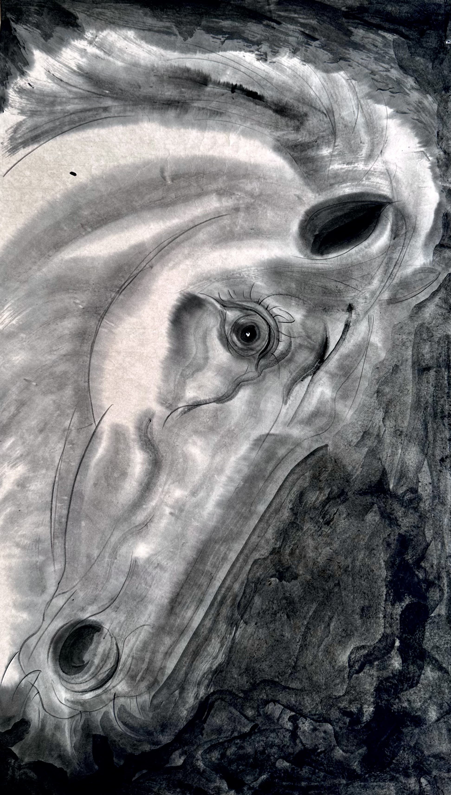
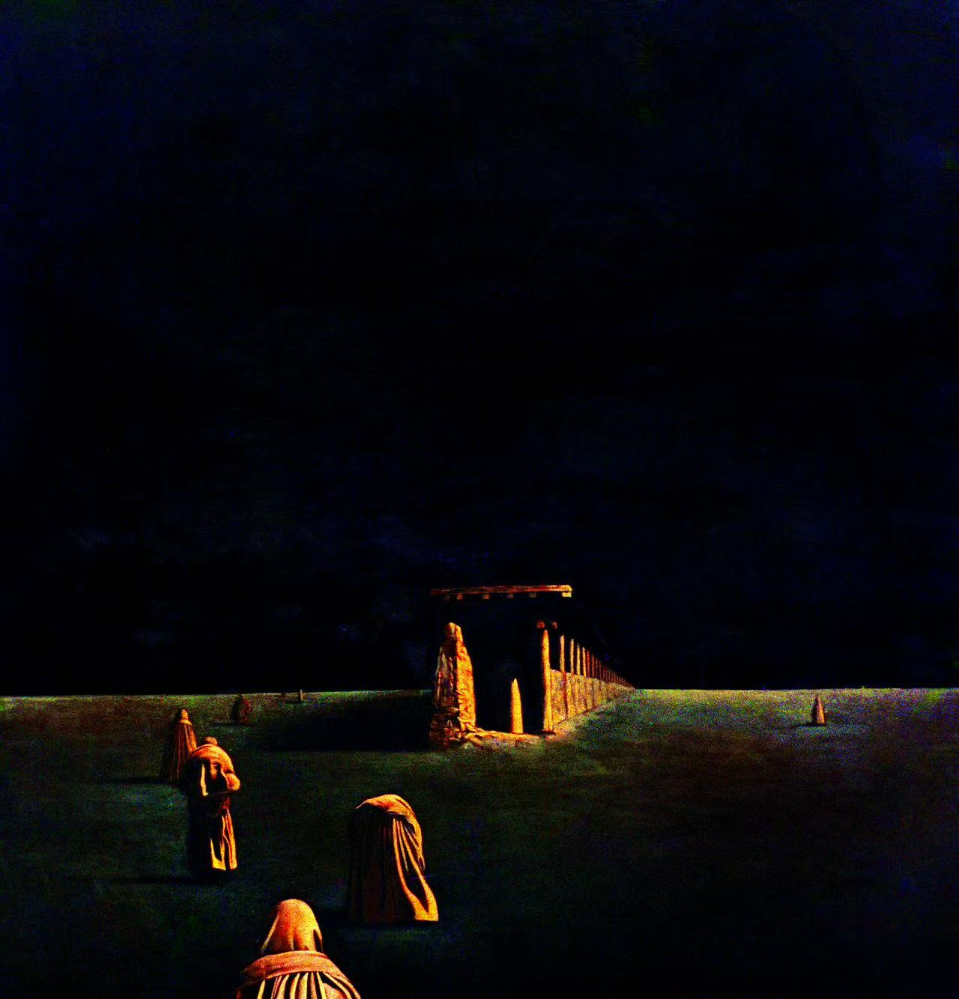

学术评论
静默的雷霆：东方腾弘与"东方神秘意象"
东方神秘意象 · 泽宇 · 2026
泽宇深度评论东方腾弘的艺术世界：他的白马不仅仅是马，而是某种精神性的化身——沉默、圣洁、超越时间。他用写实的技法去描绘超现实的场景，让观者在可信与不可信之间反复徘徊。他的画面是静默的，却包含着雷霆般的力量。这种力量不是来自外在的冲击，而是来自内在的凝聚。
阅读全文 →学术评价 · 媒体报道 · 展览动态
来自艺术评论家与学者的专业评价
东方神秘意象 · 泽宇 · 2026
泽宇深度评论东方腾弘的艺术世界：他的白马不仅仅是马，而是某种精神性的化身——沉默、圣洁、超越时间。他用写实的技法去描绘超现实的场景，让观者在可信与不可信之间反复徘徊。他的画面是静默的，却包含着雷霆般的力量。这种力量不是来自外在的冲击，而是来自内在的凝聚。
阅读全文 →
雅昌艺术网 · 艺术圈网
评论家认为东方腾弘的作品单纯而又神秘、冷峻而又柔美，已不再是外存于周围的物象景观，而是对心灵与自然交融并置的天人合一境界的追求。他以马和僧人为题材，把它们放在一起创造出一种神秘的关系，实际上是自己心理世界的外化——追求一种超越世俗的宁静与崇高。
阅读全文 →
雅昌艺术网 · 像素艺术空间
马的图式出现于东方腾弘的画面中，起先只作为画面的装饰，但随着他对马越来越细致的塑造，马的形象逐渐从画的边缘走向中心，成为了他艺术表现的主体。东方腾弘笔下的马象征了一种自强不息的进取精神，在众声喧哗的现代社会，将马作为一种独立精神加以彰显。
阅读全文 →
四川艺术网 · 吴永强
作为何多苓、周春芽等人的四川美院同窗，东方腾弘在上世纪七十年代末就已经有作品发表在专业刊物，屡屡参加了当时的一系列全国美展。1985年，东方腾弘参加了卓有影响的"前进中的中国青年全国美展"，并获铜奖。吴永强教授从学术角度深入品评了东方腾弘四十余年来在"马"这一主题上的艺术探索与精神追问。
阅读全文 →

《现代艺术》杂志
《现代艺术》杂志刊发深度学术文章，系统阐释东方腾弘绘画中白马、红僧、绿地、天光、寺塔等视觉符号与色彩的搭配组合，如何成功地把天地轮回、时空循环、生命本真、生死情缘等寓意尽显于诗意梦幻的超现实世界之中。
阅读全文 →
文化中国
在东方腾弘的画中，白马既是一种缘分的寄托，也是一个精神的引子，用来引出他行走藏区得到的感悟，特别是对藏传佛教的感悟。白马通体雪白，以单体或群体形象自由地生息，以雪山、草原、滩涂、荒野、水泽，以及毡房、牧场、老屋、喇嘛、佛塔、经幡、玛尼堆等构成背景。
阅读全文 →
雅昌艺术网 · 田旭中
天府百年美术文献展总策划人、国家一级美术师田旭中撰文指出：东方腾弘是目前中国艺术家中一位横跨中西的罕见的超现实主义画家，是表现东方神秘主义的开拓者和创始人。他的绘画第一次把写实主义、浪漫主义以及神秘主义的文化精神统摄在一起，为中国油画走向世界提供了全新的视觉样式。
阅读全文 →展览动态、媒体访谈与艺术活动

雅昌艺术网 · 2025
四川省文化产业商会副会长、四川当代油画研究院执行院长东方腾弘谈及自己的创作世界——那是一个宁静的精神领域。在访谈中，他分享了从写实主义到神秘意象的转变历程，以及对东方美学的深层思考。
阅读全文 →
雅昌艺术网 · 2025
东方腾弘绘画作品讲述暨"高层次艺术文化资源的美育产业融合"圆桌会议，深入探讨了东方腾弘的艺术语言、马的意象表达，以及高层次艺术文化资源在美育产业中的融合应用。
阅读全文 →
当代油画 · 吴永强 · 2023
2023年4月，东方腾弘受邀参加在法国巴黎卢浮宫卡鲁塞尔厅举办的"温度——当代艺术展"。吴永强教授撰文指出，东方腾弘的作品以艺术的内在温度与生命体验为核心，在国际舞台上展现了东方神秘意象的独特魅力。
阅读全文 →
罗马文书院宫达芬奇博物馆 · 2022
2022年11月，"望 SPERANZA——当代中国艺术展"在意大利罗马文书院宫达芬奇博物馆举办。东方腾弘受邀参展，将东方神秘意象绘画带入欧洲艺术圣殿，以白马与僧人的超现实画面与意大利观众展开跨文化的视觉对话。
阅读全文 →
日本福冈亚洲美术馆 · 2022
2022年第五届亚洲艺术双年展在日本福冈亚洲美术馆举办，由原馆长、批评家安永幸一担任策展人。福冈亚洲美术馆是世界唯一一家专门系统收集和展示亚洲近现代及当代艺术的美术馆，东方腾弘受邀参展，展出"东方神秘意象绘画"系列作品。展览获中华人民共和国驻福冈领事馆后援支持。
阅读全文 →

雅昌艺术网 · 三条艺术
在这次深度专访中，东方腾弘畅谈了他对艺术创作的理解：艺术是最真诚的自我表达。他回顾了从军艺到佛罗伦萨的求学之路，以及如何在东西方艺术传统的碰撞中找到自己独特的艺术语言。
阅读全文 →
雅昌艺术网 · 2020
2020年，"山川询物·宫邸为家——首届楠川设计当代艺术展"在成都举办，探索艺术与空间设计的深度融合。东方腾弘受邀参展，以"东方神秘意象绘画"系列作品展现艺术在当代居住美学中的应用。
阅读全文 →
雅昌艺术网 · 巴蜀画派
巴蜀画派名家栏目全面回顾东方腾弘的艺术人生——从1985年获"前进中的中国青年全国美展"铜奖，到赴意大利佛罗伦萨古典美术学院深造，再到创立"东方神秘意象绘画"。收录高小华、田旭中、麻亚东等名家对其艺术的深度品评。
阅读全文 →
雅昌艺术网 · 2017
万达文化集团首次联合高小华、艾轩、冷军、米金铭、东方腾弘、马千笑六位著名艺术家，在成都锦华万达电影城开启"中国艺术公众共享"征程。东方腾弘作为"中国东方神秘意象绘画代表"参展，标志着高端艺术走进百姓生活的新里程碑。
阅读全文 →
北京奥组委 · 2008
东方腾弘油画作品《行僧》被选为2008年北京奥运会组委会官方礼品，制作成陶瓷挂盘赠予国际奥委会官员及各参赛国代表，成为奥运文化交流的重要见证。
阅读更多 →
中国美术家协会 · 1985
1985年，东方腾弘参加卓有影响的"前进中的中国青年全国美展"并获铜奖，这是他早期艺术生涯的重要里程碑，也标志着其作品首次获得全国性学术认可。
阅读更多 →2024 · 东方腾弘 × Maison XO Brillet · 杭州
2024年，东方腾弘与法国人头马君度集团（Rémy Cointreau）旗下 Maison XO Brillet 联合举办艺术品鉴展，将东方神秘意象绘画与法国顶级干邑文化跨界融合，呈现一场艺术与味觉的沉浸式对话。


来自著名画家与评论家的艺术品评
东方腾弘有一颗"佛心"，又有一颗"童心"。他的绘画有一种"包浆感"，像古老瓷器表面经过岁月打磨之后形成的那种温润的光泽——不是锐利的、刺眼的光，而是柔和的、内敛的、有历史感的光。他不追赶潮流，坚持自己独特的美学世界。
东方腾弘的作品追求一种超脱尘世的境界，作品中透出一种宗教般的静穆与庄严。他的画面单纯而又神秘、冷峻而又柔美，体现出他的一种避世的哲学思想。
不论喜欢与否，这些画中都有一种率真之气，这也是近年来少见的了。
东方腾弘是一个富于激情和理想主义的艺术家。他的画里有一种对遥远世界的向往，有一种不愿被现实所束缚的浪漫。
东方腾弘以马和僧人为题材，把它们放在一起创造出一种神秘的关系，象征性的、神秘叙事性的图式已经成为他最鲜明的艺术语言。
东方腾弘的作品是值得收藏的，品位不俗。他的画面有一种特别的气韵，在当代油画创作中是不多见的。
东方腾弘的绘画具有象征主义和超现实主义的双重特征，他把东方的精神意蕴注入了西方的油画语言，形成了独特的"东方神秘意象"。
东方腾弘的艺术是精神层面的探索，他试图通过画面构建一个精神的净土——那里有白马、僧人、雪山，有人类最初的宁静与庄严。
东方腾弘的创作几乎贯穿了近三十多年中国现当代美术史，从伤痕美术到新潮美术，从玩世现实主义到新表现主义，他始终在变化中寻找自己的定位。
东方腾弘的画里有一种神性的东西，这种神性不是宗教意义上的，而是人类面对大自然与命运时的一种崇高感与敬畏。
东方腾弘对空间和色彩的把握令人称道。他的画面空间辽阔而深远，色彩沉着而有力度，具有极高的艺术品味。
东方腾弘的作品有一种超越性，他不满足于描绘现实的表象，而是试图抵达某种更为本质的、永恒的精神境界。
主要头衔与学术认证